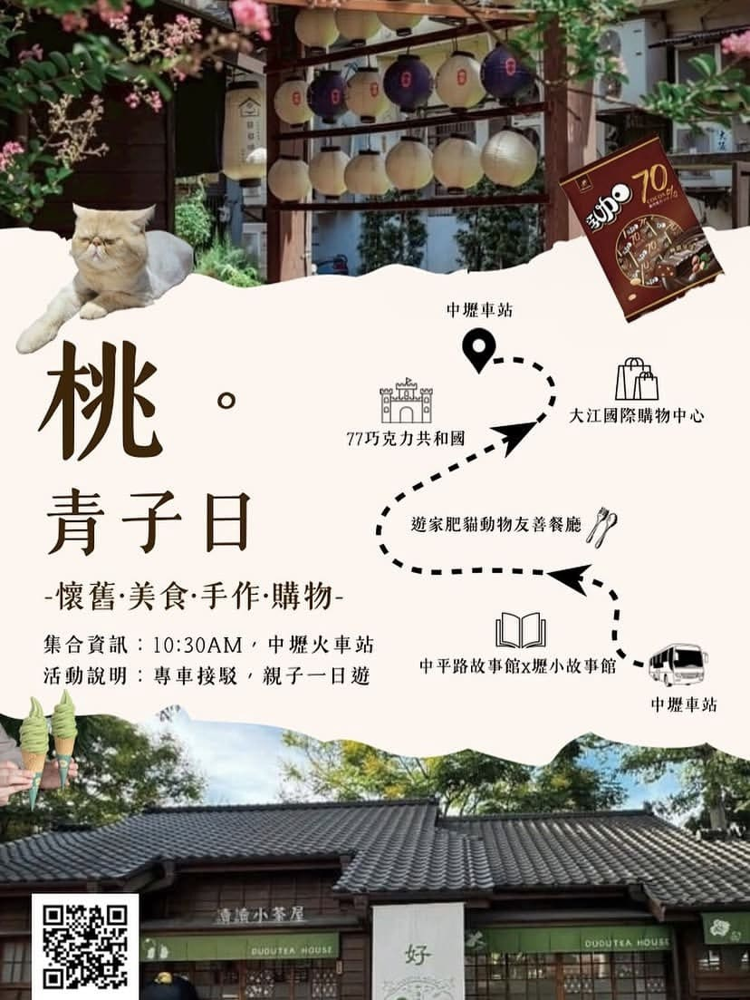
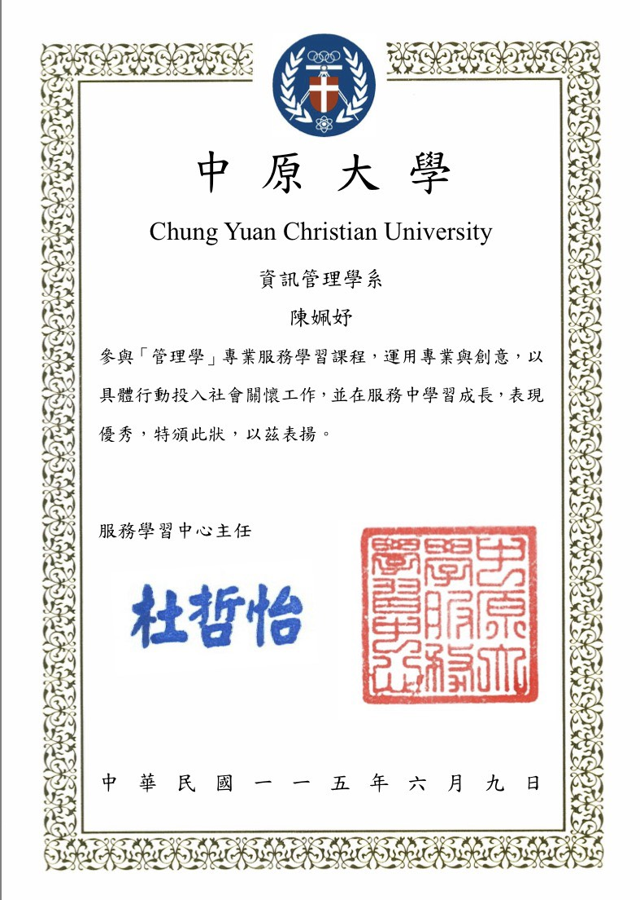
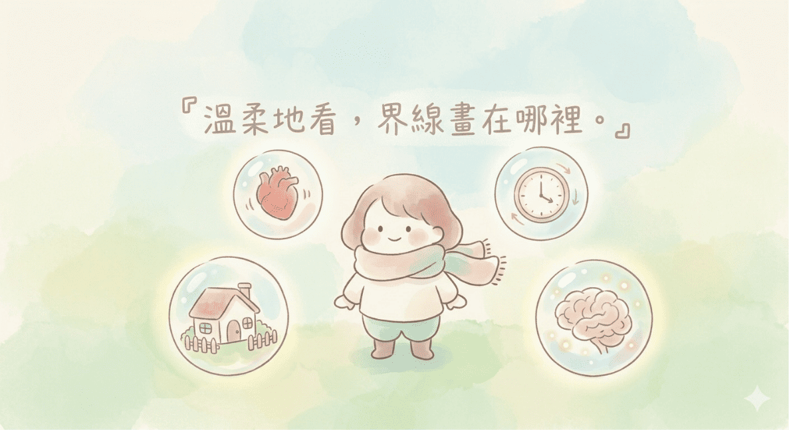

企業概論旅遊專案

在旅遊專案設計中，製作網路宣傳海報及宣傳影片，從一開始不太熟悉中壢，探索旅遊景點，再做一日遊的時程安排，最後實際踏訪景點，親身體驗遊者感受，並蒐集影片素材製作宣傳影片吸引受眾，定價後的自我行銷推廣。
深刻體會專案促成以及培養企業行銷能力。
中原大學 資訊管理學系
[樂觀] [熱愛大自然]
平時喜歡種植和觀察植物，這培養了我的細心與耐心。
在學習與生活上，我喜歡將事物整理得井井有條，秉持著把每件事情做好的態度，踏實完成每一項挑戰。

在旅遊專案設計中，製作網路宣傳海報及宣傳影片，從一開始不太熟悉中壢，探索旅遊景點，再做一日遊的時程安排，最後實際踏訪景點，親身體驗遊者感受，並蒐集影片素材製作宣傳影片吸引受眾，定價後的自我行銷推廣。
深刻體會專案促成以及培養企業行銷能力。

在管理學課程中，從前期撰寫服務學習企畫書到實際前往新竹青少年館擔任圖書志工，我在團隊中擔任組長與現場圖書分類整理。 雖然一日的服務體驗很短暫，但在整理上架的過程中，我深刻意識到「系統化編碼」的重要性，一套好的分類編碼不僅能幫助讀者快速找到目標書籍，更能讓對特定領域有興趣的讀者發掘更多同類型好書，也讓我學會從使用者角度反思環境並思考改善方法。

在人生哲學課程的小組活動中，我們針對「人與人之間的界線」進行探討與報告。製作過程中，我發現若直接講述抽象理論會過於枯燥乏味，因此我主動運用 AI 繪圖工具生成一系列故事插畫，並結合情境旁白，透過「說故事」的方式具象化呈現什麼是界線、該如何設立，以及設立前後的情緒轉折。 這次經驗讓我深刻體會到，善用數位工具並結合圖文敘事，能讓生硬的觀念變得更有溫度且易於理解。
查看專案作品 ➔